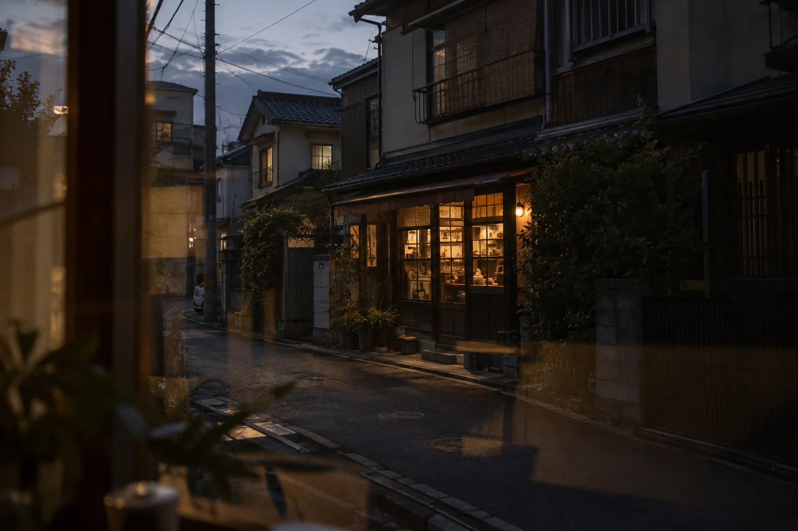
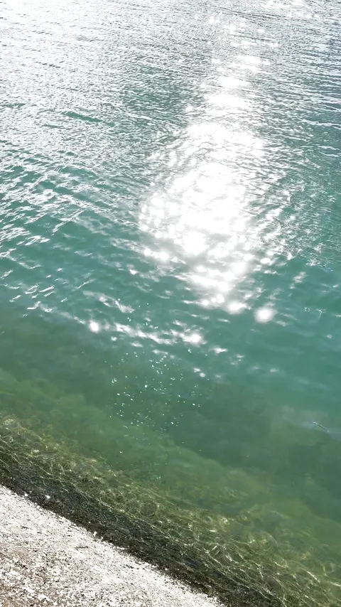
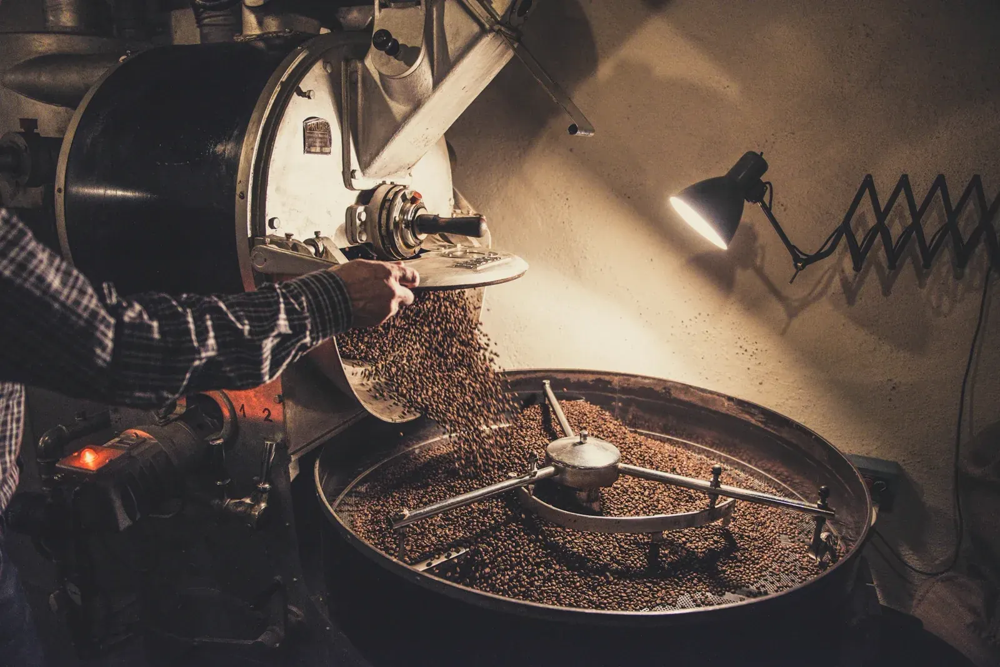
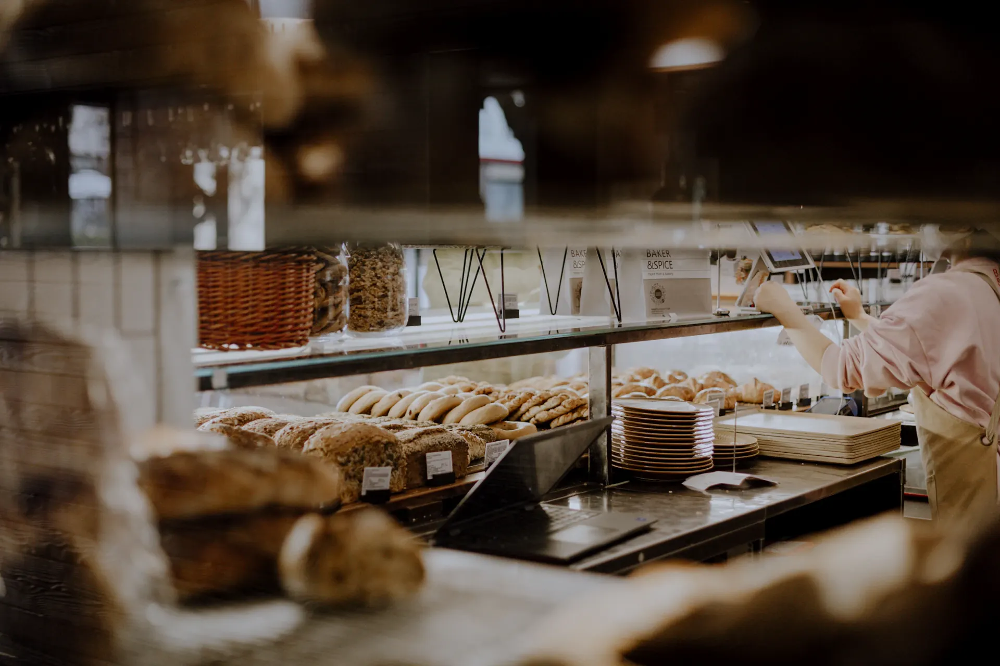
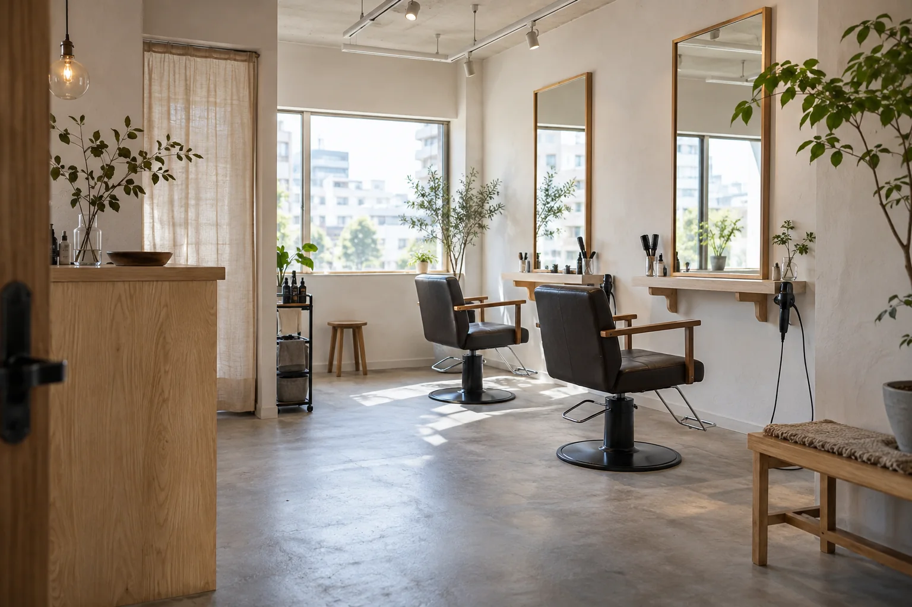
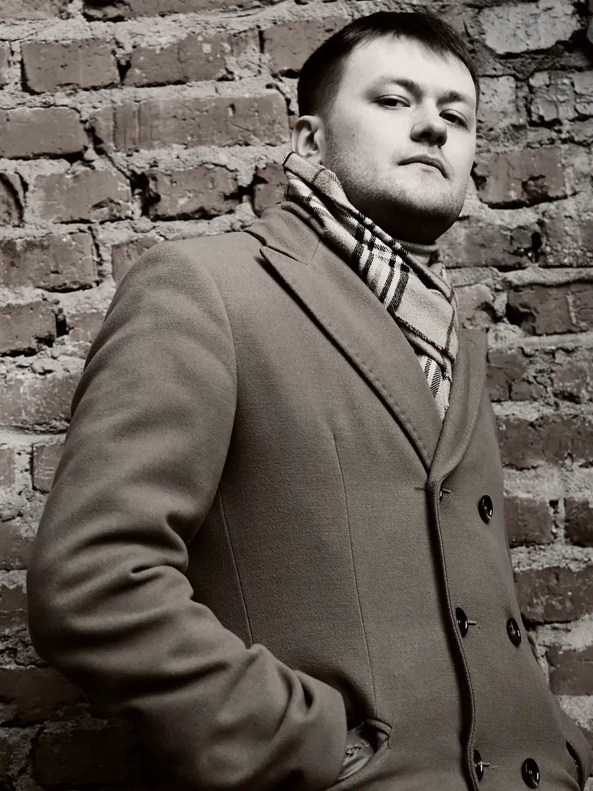
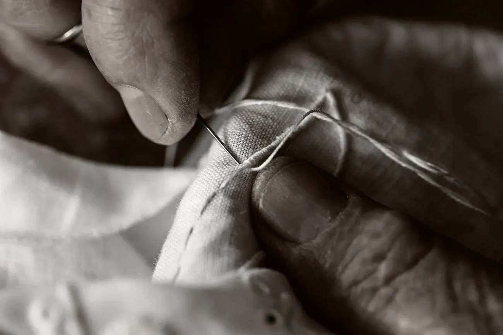
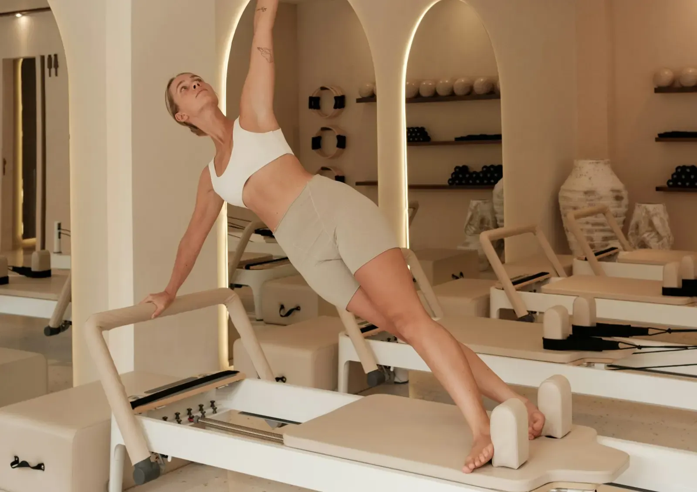
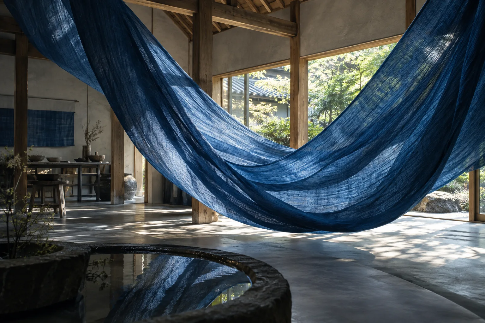

あわい静かな紙最初は小さな三文字だけ。同じ繊維を、帰還と最後にも残す。接触で密度が下がる。輪郭のない透過。あわい最初の接触承認済みのS1の感触を維持。向こうの世界を見せ切らない。
あいだが開く同じ紙面が左右へ分かれ、町が全画面へ。その世界が再び閉じて一本の光になる。光の線の向こうが、町から焙煎の暗さへ変わる。光が扉になる紙の場面が終わって写真が始まるのではなく、線そのものが助任の入口になる。
おきのはま製パン製パン / 見本短い朝の断片一枚の売り場を長く紹介しない。小さな暖色の断片から朝の光だけを受け渡す。朝の明るい面が、サロンの昼の光へ静かに入れ替わる。UCHIMACHI HAIRヘアサロン / 見本動かない時間写真は完全に静止。ユーザーがどれだけ止まるかを決める。
KASANE衣服 / 見本黒の短いカット本番は同時三分割ではなく全画面の3カット。各380msを目安に視認を確保し、先へ進む権利は残す。黒の最後のカットから朱の面へ、短く切り替える。pilates studio ARCピラティス / 見本朱が全面へ単色の面積で温度が変わる。姿勢は切らず、朱が画面全体を占める。
STUDIO FREE広告映像 / ご依頼絵コンテは構成用生成イメージ実時間が流れる朱の後に、実際の広告動画を1倍速で6〜8秒。離れれば停止。承認画像は動画の代わりとして完成扱いにしない。映像の最後の光が紙へ戻り、何もない一呼吸。山の前の間紙だけ。新しい見せ場を足さず、その面から藍の布が現れる。
AIMA藍染と滞在 / 見本触れる藍布の織りを残して染まりが滲む。同じ接触と復元の法則を物性へ移し、筆跡やペイントUIを作らない。作品と舞台が重なる時間を長く取る。スクロールで布の密度が引き、同じ面が最初の紙へ戻る。同じ紙へ帰る新しい紙を上から被せるのでなく、布と紙の密度が入れ替わる。同じ繊維が同じ位置へ戻る。
静寂触感なし、文字なし。向こうの光がゆっくり遠ざかる。紙を切り替えず、その裏から人の言葉が現れる。徳島の実家で、ひとりで、つくっています。仮社長 / 大山（仮文言）初めて、人墨が紙へ着地。（仮）の小さな遅れは一度だけ。最終の名前はデータで管理。
Works / 制作区分CreditsInstagram / LINE料金と進め方エンドロール同じ紙の上を小さな文字が通り、余白へ消える。ページ末尾の情報ブロックを置かない。文字が去ったあとも、同じ一枚の紙が残る。ここに、あなたの店の話が入ります。話してみるLINE Instagram最後の空白S1と同じ反応で薄くなるが、向こうには白だけ。接触しなくても文言と連絡先は読める。接触は開場・助任・AIMA・最後の4回だけ。